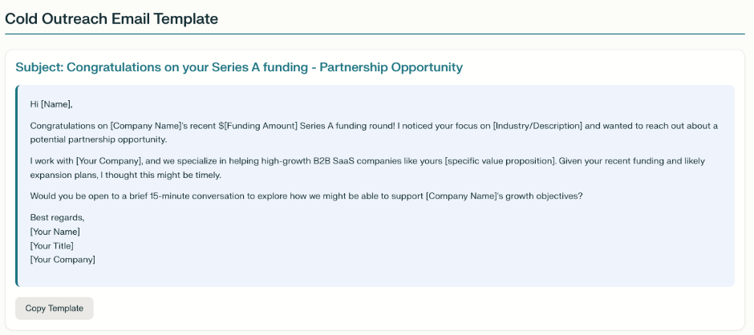
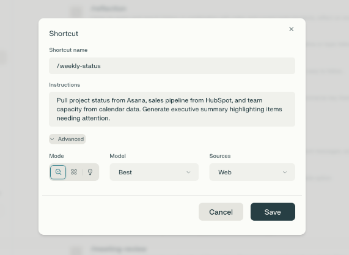
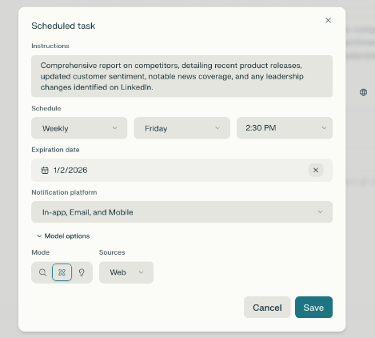
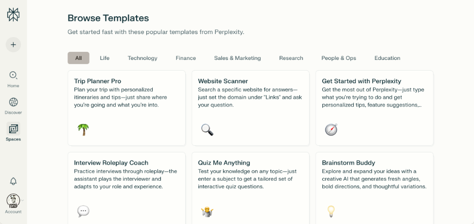
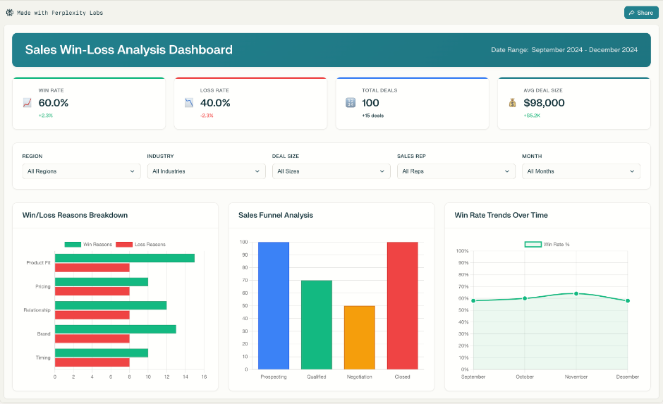

pplx-at-work
Perplexity at Work

高效工作指南


简介
入门
屏蔽干扰：利用AI夺回专注力
提升自我：AI最佳使用方式是以你的才能为主导
获取成果：利用AI更快完成更多工作
后记
简介

AI助你高效工作的完整指南

当今快节奏的工作环境让人工智能展现出无限可能——但对大多数专业人士来说，现实要复杂得多。我们许多人发现自己迷失在各种AI订阅中，在零散的应用之间切换，花费的精力比推进实际目标还要多。预期的生产力飞跃往往因复杂性和持续干扰而停滞。
事实上，高效工作分为几个层面：首先，是保护注意力免受大量干扰的斗争；其次，是提升个人能力、实现曾经遥不可及目标的动力；最后，是追求可见的、有意义的成果，推动组织和职业发展。
本指南将AI重新定义为非单一的"灵丹妙药"，而是完成无穷无尽待办事项的三个阶段的自然延伸。
屏蔽干扰
AI最基础的使用方式是夺回你的时间和专注力。现代工作环境有太多干扰和耗时的流程。通过委托重复性任务和减少上下文切换，你可以将脑力投入到重要的工作中。使用AI工具屏蔽干扰，为每个专业人士提供创造力、推理和洞察力所需的专注空间。
提升自我
一旦为深度工作创造了空间，AI就成为力量倍增器。AI最佳使用方式是以你的天然才能为主导。在这个层面，它让你能够进行研究、综合信息，并以质量和规模创造成果，否则需要花费许多小时或多人的努力。你从独行侠转变为一人团队，应对更大的挑战，学习速度比以往任何时候都更快。
获取成果
AI驱动工作的终极目标是将增强的带宽和能力引向具体的、可衡量的成果。无论是推动收入、达成重要交易，还是制定让你脱颖而出的战略，AI都能让你交付更多有影响力的成果——让你的努力可见，让你的职业发展有形。
这三种思考AI的方式也构成了思考工作本身的实用方法。从专注开始。用放大来构建。用成果结束。它们共同提供了一条路线图，不仅是为了采用新技术，更是为了从根本上改变职业发展的可能性。

入门

Perplexity作为你的统一AI平台

Perplexity将你所需的一切整合在一个地方，让你无需在数百个标签页和独立工具之间切换：
 Comet Labs
Comet Labs

你的AI研究浏览器， Perplexity的创作工作室，用于自动处理任务和 构建演示文稿、仪表板，简化复杂工作流程。 产品或营销活动——为你完成，

无需任何技术技能即可完成。

研究 Spaces
Perplexity中深度抓取数百个来源的网络和文件研究智能体， 将你的所有研究、笔记和上下文整合在一起，用于任何主题， 并提供清晰的引用报告。 让一切按你需要的方式在Perplexity中有序组织。
 Email Assistant Perplexity无需在账户和应用之间切换，让所有工作保持连接
Email Assistant Perplexity无需在账户和应用之间切换，让所有工作保持连接
AI助手帮助你管理 上下文随身携带——让你总是收件箱、草拟回复和智能处理 从上次离开的地方继续。邮件任务。 Perplexity作为思考伙伴
Perplexity可以快速为你提供任何主题的可靠信息。你可以将其用于市场分析、技术细节、竞争对手研究、阅读学术论文——完成工作所需的任何内容。
Comet这款AI浏览器可以从混乱的网络会话中解脱信息搜索和收集的负担。只需提出问题或描述你的目标，Comet就会跟踪你想要找到的内容——全程使用自然对话。
有了这些工具，互联网就像你思维的延伸。
Perplexity作为工作伙伴
Perplexity不仅帮助你研究。它实际上为你完成工作——制作幻灯片、构建仪表板、运行营销任务，甚至用Labs进行新概念原型设计。
Comet可以处理常规工作，如日程安排、账户管理或在平台之间跳转，让你专注于决策和战略。
工作提示
从Perplexity获得最大收益始于大声思考。不要将其视为搜索引擎——首先分享你的目标，而不仅仅是关键词。
提示技巧
清楚你想要什么。你越具体，结果就越有用、越有针对性。例如，说出你正在尝试做的事情以及你需要答案或文档的类型。
效果较差的提示 "Help me with my emails"
查找过去3天内需要回复的所有未回复邮件，并起草简要回复
使用您自己的上下文
Comet 可以看到您浏览的所有内容，理解您的思维运作方式。在跨多个上下文工作时，使用 @tab 功能引用特定页面。
"比较 @[tab1] 和 @[tab2] 中的定价和产品功能，然后创建一个突出显示关键差异的摘要表"
构建多步骤工作流
Comet 将复杂的工作流折叠为单一的无缝交互。将请求分解为清晰的顺序步骤以获得最佳效果。
"首先，分析此产品页面的关键功能。然后，找到三个竞争对手的产品。最后，创建一个包含每个产品优缺点的对比表"
将 Comet 视为您最有能力的团队成员。您越能清晰地表达完整的工作流程、上下文和期望结果，AI 越能在战略执行的层面上运作，而不是完成基本任务。

第一部分：阻止干扰

重新找回专注工作的乐趣

工作中最快乐的时刻发生在您全神贯注解决有意义的事情时——当您完全投入到一个有趣的挑战中时，时间仿佛消失了。然而，现代工作场所的设计似乎恰恰是为了阻止这种体验。

每一次通知、上下文切换和行政任务都会让您远离最初让您对工作感到兴奋的事情。研究表明，我们每11分钟就会被中断一次，但真正的成本不仅仅是时间——而是当我们花更多精力管理工具而不是探索想法时，我们自然好奇心逐渐被侵蚀。
本节将向您展示如何使用 AI 消除分散您注意力的摩擦。您不需要添加另一个要管理的系统，而是将目前消耗您脑力带宽的行政开销委托出去。当您的 AI 助手在后台处理常规信息收集、日程安排和任务协调时，您可以回归人类最擅长的事情：提出有趣的问题并深入思考有意义的问题。
目标是恢复您持续好奇心的能力，这能使工作变得真正愉快。当您不再不断地回复邮件或在分散的应用之间切换时，您会重新发现为什么最初选择了这个职业。
重新专注的3种方法
本节介绍三种减少干扰的简单方法：
→ Perplexity 作为个人助理 - 让 AI 处理日常任务，保持您对最重要工作的专注。
→ 摆脱不断切换：使用 Comet，您的研究在更少的标签页中完成——不再需要在混乱的标签页之间跳来跳去。
→ 自动化您的重复性工作 - 将多步骤工作转化为简单的提示或计划任务，让 Perplexity 保持一切运行。
Perplexity 作为您的个人助理
我们中的大多数人在排序邮件、安排会议和在不同的应用之间查找东西上花费了太多时间。这会消耗您的注意力，使您更难做更大、更重要的工作。
Comet 和 Email Assistant 作为智能助手介入，为您处理日常琐事。您不需要同时使用多个应用，只需给出一次指令。Perplexity 会在后台继续工作，因此您可以专注于重要的事情。
Comet：助手与代理
Comet 为您提供两种助手：侧边栏助手和代理。助手是您理解、阅读和回答问题的首选。这就像在浏览器中有一个聪明的朋友，能解释事情并帮助您做出好的决定。
代理是您的执行者：当您希望某事为您完成时，这个助手会介入。告诉它要做什么（发送邮件、管理日程、查找东西），它就会开始工作。提示：尝试以"控制我的浏览器并..."开头您的提示，以从代理处获得更好的结果。
它们一起工作，让浏览更智能、更有帮助。
Comet 助手
Comet 助手随时可用，就在浏览器的侧边栏中。它主要帮助您阅读、理解和跟踪事务。
它可以帮助您完成以下事项：
→ 摘要：文章、邮件、Slack 聊天、网页——请求要旨，获得快速答案。
→ 对话帮助：通过说话或打字提问，获得清晰的答案。
→ 研究支持：快速获得翻译、解释和事实核查。
→ 标签页感知：它可以看到多个打开的标签页，并帮助您建立联系。
将助手视为一个让工作更轻松、更快的智能阅读伙伴。或者，一个可以帮您处理任何事情的大脑助手！
Perplexity

询问任何内容或导航... 助手

助手

最近

Perplexity

询问任何内容...


Comet 助手的有用提示
"分析这份合同并突出潜在的 法律问题。"
"为我提供此视频的详细摘要和提到的所有链接。"
"根据这篇文章给我10个帖子想法。请确保使用我的风格。"
"这则新闻报道还有什么其他观点？总结一些共同主题。"
"阅读并总结今天收到的所有提及'AI项目'的Slack消息。"
"核实这篇社交帖子中提到的财务数据。"
智能体在收到提示时不仅擅长查找信息，它还能真正介入并为你处理任务。把它想象成你的数字助手，随时准备处理你通常需要自己处理的事情。
通过智能体，你可以让它找到与你日历匹配的航班、安排会议、填写网站表单、管理邮件订阅，甚至帮助处理购物车和购买。它设计为直接连接 Gmail、日历和 Google Drive 等服务，这样你所有的账户都能协同工作。
当面对需要多个步骤或需要在网站之间切换的流程时，智能体可以自行处理整个工作流程。你保持控制权，因为智能体总是在做重要或敏感的事情之前向你确认。这样，你就能更快地完成任务，而不会失去监督。
"找到最新发布的、专注于[插入主题]的期刊文章。然后，在新标签页中打开每篇文章，并创建一个比较表来分析研究方法和结果。"
"找出过去3天中所有需要回复但尚未回复的邮件，并起草简短的回复。忽略日历邀请。"
"按主题对我的标签页进行分组，并关闭任何与当前项目无关的标签页。"
"用我的简历申请在这个窗口中打开的职位列表。"
"找到并调出 Jensen Huang 在 GTC 上谈论 Perplexity 的部分视频。"
"浏览这些客户案例研究，找出与我们公司使用该供应商方式相关的用例。"
"浏览亚马逊，看看我有一段时间没有订购的用品，并将其发送到办公室地址。"
你的收件箱是专业人士标签切换和注意力流失的最大来源之一，这已经不是什么秘密普通人每天收到 121 封邮件，每 12 分钟查看一次邮件，造成持续的打断循环，破坏生产力。
Perplexity 的邮件助手作为现有邮件系统的智能层运行，自动处理邮件以浮现需要你注意的内容，同时自主处理起草、协调和安排工作。
邮件助手直接集成你的 Gmail 账户和 Outlook，提供智能邮件处理，无需你更改现有邮件设置或工作流程。
智能自动标签将传入邮件分类为"待回复"、"FYI"和"通知"，让你立即专注于需要采取行动的内容与只是信息性的内容。
会议日程安排在参与者可用性中搜索，建议时间槽，并直接从邮件对话中发送日历邀请，无需在应用程序之间切换。
语音匹配回复生成听起来像你的回复，学习你的沟通风格以在自动处理日常信件时保持真实性。
今天的工作充满了干扰。总是有新的标签页、应用程序或邮件弹出，把你的注意力拉走。当你不断在工具之间跳转——查看日历、搜索文档、扫描通知——很难保持任何真正的专注。
真正的问题不仅是失去的时间，还有每次干扰后重新进入状态的心理努力。这些小的休息累积起来，让你很难把精力花在对最重要的事情上。
Perplexity 不是通过更严格的日程或复杂的日程安排来对抗干扰，而是通过将所有任务和研究集中在一个地方来帮助你。
Comet 将混乱的网络会话变成流畅的聊天体验。你不需要同时处理数十个标签页或应用程序；你可以通过聊天来提问、查找信息，甚至完成任务。
通过邮件助手，你可以让 Perplexity 处理你的收件箱——分类邮件、起草回复和跟进——这样每次收到提醒时你都不会失去注意力。
你也可以直接将你已经使用的应用程序连接到 Perplexity。这样，你就可以在不离开工作区的情况下运行你的日程。
无需在不同网站和平台之间跳转，你可以获得邮件、新闻和研究的简单摘要——都在一个干净的线程中。这意味着更少的时间用于搜索信息，更多的时间用于实际工作。
提示："总结过去4小时的邮件，突出任何需要立即关注的内容，并简要介绍 Morrison 项目的任何更新。"
行业新闻概览提示："今天行业新闻中的关键要点是什么，可能会影响我们的第四季度规划？"
从所有软件工具获取更新
无需登录多个项目管理系统、通讯工具和客户系统来检查进度并向相关人员更新最新情况。
提示："查看 Salesforce 并分享目前销售渠道中所有交易的状态。高亮本周需要管理层关注的事项。"
提示："找出 Linear 中分配给我的所有高优先级 bug 并进行汇总。"
项目管理层
"我在 Github 的 'X' PR 状态如何？"
"过去一天 Notion 中更新的文档中哪些提到了 AI 基础设施？请总结这些提及内容。"
会议准备
在重要电话前，无需从邮件、会议记录、项目文件和客户记录中跨多个平台收集信息，只需询问 Comet 即可。
提示："为我准备下午 3 点的战略会议——当前的关键指标、计划更新以及需要领导层意见的问题。"
通用准备
或者
"分享我与这个潜在客户之前的所有沟通记录。自那之后该公司有什么公开新闻吗？"
提示："我即将到来的客户电话需要了解什么？
新客户电话
这家公司的其他决策者还有谁应该参加下一次的
销售电话？"
文档和信息检索
无需在多个文件系统、邮件附件、共享驱动器和协作平台中搜索特定文档或信息。
使用 Perplexity 应用连接器可在所有连接的平台进行统一搜索。提示："找到 Notion 中产品路线图演示的最新版本以及上周利益相关者审查的任何反馈。"
有些切换只是完成实际工作的一部分。AI 最强大的用途之一就是消除尽可能多的不必要的切换。切换标签页、应用或注意力。
真正的收获来自于消除不必要的摩擦：打开标签页只是为了找一个细节，或者重复相同的步骤来完成日常事务。通过让信息易于获取并让常规工作自动运行，你可以释放更多注意力来处理复杂的问题和创意挑战。
当收集细节和更新列表感觉更像是一次快速聊天而不是流程，当"琐碎工作"在后台自行处理时，你就能专注于需要你专业知识和判断的事情。
自动化重复工作流程
最棘手的干扰通常不是喧闹的——它们是那些不断打断你节奏的小而重复的任务。预约会议、追踪更新、管理物流……它们看起来很快，但会快速累积并侵蚀你的注意力。
Comet 可以把这些琐事变成简单的操作或定时任务。无需记住要跟进或在平台之间复制信息，你只需要说出需要做什么。Comet 会协调并执行，这样你就能保持心流状态。
通过快捷方式和任务扩展自己
→ Comet 快捷方式是可在 Comet 中执行的简单命令——只需在浏览器中输入 "/" 并说出需要发生的事情。无论是多步骤流程还是每周都会做的事情，你都可以设置一次，然后让 Comet 点击处理。
→ Perplexity 任务适用于你想定期提出的研究查询。也许你每天需要一份邮件报告、仪表板更新或新闻扫描——只需设置任务，它就会按计划运行，无需再费心。
最终结果：更智能的自动化，减少在琐事上流失的时间，以及更多精力投入于你最重要的工作。
Comet 快捷方式
快捷方式：提示："回顾我与 [客户名称] 的最近三次互动，找出任何承诺或行动项目，并根据时间线和优先级安排适当的跟进消息。"
快捷方式：提示："查看所有产品团队成员下周的时间安排，推荐三个 1 小时的时间段，发送带有会议议程模板的日历邀请。"

快捷方式：提示："从 Asana 拉取项目状态，从 HubSpot 拉取销售渠道，从日历数据拉取团队产能。生成执行摘要，高亮需要关注的事项。"

提示："帮我准备下一次会议，列出参与者，概述会议目标和议程，

快捷方式：提示："高亮我应该审核或准备的任何内容，并建议我可以提出的问题。选择会议时，忽略全天事件和没有其他参与者 /prep-next-meeting 的会议。如果任何参与者是我公司外部的人员，
包括一份简短的简历。"





Perplexity 任务
提示："创建一份个性化新闻通讯，突出显示我邮件、日历和核心工作工具中最重要的会议、任务和截止日期。总结我应该了解的关键行业趋势
任务：创建个性化或可能影响我业务或团队的重大新闻。以最近阅读的有
的每日或每周新闻通讯
启发性的名言或洞察作为结尾。优先列出今天需要我关注的内容，保持简洁，并注明无法检索到的内容。"

提示："提供一份关于我们竞争对手的综合报告。"

任务：进行每周竞争对手审视。查看我们的竞争对手，找出他们最近的产品发布、对产品的最新客户情绪分析、他们在新闻中的其他事项，以及 LinkedIn 上的任何领导层变动。
分析竞争对手的产品、他们在新闻中的其他动态，以及 LinkedIn 上的任何领导层变动。
任务：提示：“每天早上，分享任何涉及欧盟新 AI 监管的法案。列出将 AI 使用纳入其中的任何公共法律案件。”
第二部分：扩展自身能力
放大你的天然好奇心
一旦你保护了自己的注意力，一些非凡的事情就会发生：你的问题变得更加宏大。有了不间断的思考时间，你自然会更加关注更大的挑战、更复杂的问题，以及那些看起来超出了你个人能力去探索的机会。
这就是 AI 变得最强大的时候——不是取代你的思考，而是放大你的天然好奇心。当你想知道“解决这个问题需要了解什么？”时，你可以立即找到答案，而不需要组建委员会或安排后续会议。当你想知道“有没有更好的方法？”时，你可以用过去研究一个问题的时间来探索数十种方法。
你的专业知识和直觉仍然牢牢掌控着主导权，但 AI 消除了提出好问题和获得全面答案之间的传统障碍。你可以进行像专业团队一样深入的研究，合成你感兴趣的不同领域的见解，并创造出反映你完整思考的专业成果——而不仅仅是你在中断之间有时间完成的内容。
这不是关于工作更长时间或承担更多任务，而是关于按照你实际好奇心的规模工作，终于能够用应有的严谨性去追求真正令你感兴趣的问题。你从任务的管理者转变为可能性的探索者。
本节介绍四种基本方法，帮助你扩展个人能力，超越传统生产力方法所允许的范围：
→ 将 AI 融入你现有的工作流程——系统性地将 AI 能力整合到你当前的业务流程中，识别高影响力的整合点，创造可持续的工作流程，放大而不是取代你的现有专业知识。
→ 高级研究——通过利用 AI 改变你收集、分析和综合信息的方式，AI 可以同时处理数百个来源，同时保持上下文并产生洞察。
→ 内容创作——超越起草帮助，生成完整的演示文稿、报告、提案和活动，这些通常需要专业知识或跨职能团队才能完成。
→ 复杂问题解决——将研究深度与分析能力相结合，帮助你在不熟悉的领域以专家级别的能力应对挑战。向 Perplexity 索取深度报告，甚至是带有具体分析的 Excel 表格。
将 AI 融入你现有的工作流程
大多数 AI 工具的问题在于，它们看起来像是你可以使用的又一个工具。但 Perplexity，特别是 Comet，当你将其整合到日常工作流程中时，其价值会成倍增长。不要在“正常工作模式”和“AI辅助模式”之间切换，最好将 Perplexity 整合到你自然处理项目和日常职责的方式中。以下是具体方法：
以系统而非任务为导向
关键转变是将你的工作视为相互关联的工作流程，而不是孤立的任务。不要先“我需要研究竞争对手”，然后是“我需要更新定价”，然后是“我需要为销售团队做简报”，而是应该问：“我需要进行竞争情报分析，为我们的定价策略提供信息，并为销售团队提供支持。”
另一个思考方式是，像你自己的管理者一样思考。
通过对自己的工作进行宏观审视，你可以设计使用 Perplexity 提供的各种工具（如 Labs 和 Comet）的工作流程，并在步骤之间保持上下文和洞察，而不是每次都重新开始。
更好的研究方法
很容易把 AI 研究工具当作升级版的搜索引擎来对待，一次问一个问题并获得快速答案。但通过使用 Perplexity（利用 Research、Labs 和 Comet），你可以获得更强大的能力。就像有一个团队在你身后——跟踪你的大问题，交叉核对答案，并始终基于你已学到的知识继续构建。
实用的研究应用
市场情报与竞争分析
提示：“分析企业 AI 自动化市场，包括主要参与者、市场规模预测、主要客户细分市场监管考虑因素。识别新兴竞争对手和潜在合作机会。”
战略规划
工作流程整合：在季度规划会议期间，利用研究验证假设并识别新机会。
技术与行业评估
提示：“评估金融服务领域的量子计算应用，包括当前能力、主要供应商、实施挑战、商业化时间表和监管影响。”
内部数据分析
提示：“分析我们第三季度的销售数据，创建按地区、产品线和客户细分市场划分的图表。识别趋势、异常现象和第四季度战略建议。”
外部数据分析
提示：Analyze and compare the capital expenditures (CapEx) of the top 50 S&P500
投资与合作伙伴评估
工作流程整合： 在合作伙伴讨论或投资决策之前，收集全面的背景情报。
提示词： "分析医疗AI领域的潜在战略合作伙伴，包括公司财务状况、技术能力、客户重叠、监管合规性和文化契合度因素。"
产品研发调研
工作流程整合： 在产品路线图规划期间，同时研究市场需求和技术趋势。
提示词： "研究企业生产力软件的新兴趋势，包括用户行为变化、技术采用模式和竞争功能开发。识别我们产品可以解决的未满足需求。"
监管合规
工作流程整合： 将定期的监管实施时间表、合规要求审查纳入现有合规流程。
提示词： "研究欧盟和亚太地区即将出台的数据隐私法规，包括SaaS公司的实施时间表、合规要求概览以及潜在业务影响。"
客户与市场验证
工作流程整合： 在重要客户会议或市场扩张决策之前，收集全面的市场背景。
提示词： "研究中型零售企业在库存管理方面当前面临的挑战，包括他们正在评估的技术解决方案、预算约束和决策流程。识别我们的方法如何解决未满足的需求。
一般研究
在写作环境中提问并收集支持信息。
"远程工作采用的最大统计数据是什么？"或"找到三个支持此论点的案例研究。"
使用Perplexity Spaces扩展研究
许多AI工具的一个挑战是它们非常有创意，但不擅长适应您的内部品牌指南或研究原则。
Perplexity Spaces允许您创建具有自定义指令和示例材料的专用环境，确保所有生成的内容与您已建立的品牌声音和 Research 标准保持一致。
自定义指令定义您的沟通风格、行业术语、首选格式和质量标准。上传您最好的演示文稿、报告或通信示例，以建立您希望在整个AI生成内容中保持的基调和方法。
品牌一致性通过提供展示您首选消息传递方法、视觉风格指南和专业标准的示例材料来维护。Space在生成新内容时会参考这些材料，确保输出与您已建立的品牌形象一致。
示例设置：将您的三个最佳客户演示文稿、季度报告和提案文档上传到一个Space，并说明您的行业重点、目标受众和沟通偏好。所有未来的内容生成都将保持这种 established 的专业标准和声音。
Perplexity

询问任何问题或导航... 助手




潜在客户研究员
输入公司名称以构建详细的潜在客户报告，指导您的外展活动。
收集和分析：
访问我们的模板库以获取更多Perplexity Space模板
产品赋能中心
借助内部文档和常见问题解答，自信地回答有关市场和销售的问题。
当用户询问有关产品的问题时：
a. 使用清晰、优势导向的语言
b. 关注价值主张、差异化和使用场景
c. 在相关时加入关键事实、功能或定位信息
语气：清晰、自信、乐于助人——帮助用户在任何销售或营销对话中表现出色。
如果内容无法涵盖答案，请告知用户缺失的信息，并建议可能提供帮助的团队或文档。
访问我们的模板库获取更多 Perplexity Space 模板
内容创作
大多数人都擅长在自己的领域写作和分享想法，但将这些想法转化为精美的演示文稿、报告或视觉内容可能既缓慢又耗时。通常，让某些东西看起来专业比想出最初的创意需要更长的时间——这可能会阻止你做更多的事情或分享你最好的作品。
通过 Labs，你可以专注于核心想法和策略，而 Perplexity 则负责格式化和制作细节。这意味着你可以更快地获得高质量的工作，从而有更多时间思考，而不是被困在细节中。
从想法到专业成果
你不需要花数小时在格式、设计和制作细节上，而是可以为 Labs 提供战略方向和专业知识，它会负责执行。你的想法和知识始终是核心。
无需学习新的内容创作技能，你可以放大现有能力，涵盖你的角色已经需要的内容类型，无论是高管沟通、客户提案、团队演示还是项目文档。
Perplexity 中的图像和视频生成
图像生成可创建自定义图形、照片、图表、插图和视觉元素，支持你的内容，无需设计专业知识或图库搜索。
视频生成为演示文稿、培训材料和通讯制作专业视频内容，而这些通常需要视频制作资源。
内容创作应用
演示文稿开发
提示："把我的战略会议笔记整理成一份董事会演示文稿，覆盖第三季度业绩、市场挑战和第四季度目标。包含适当的高管级别格式、相关的数据可视化内容，以及明确的行动项。"
文档
提示："将我的市场分析笔记转化为专业的战略文档，包含执行摘要、详细发现、建议和支持数据。使用专业的标题、图表和附录格式。"
客户沟通
提示："把我的项目提案大纲转化为全面的客户提案，包含项目时间表、交付成果、团队结构、定价和案例研究。保留我的技术方法但提升专业演示效果。"
内部沟通
提示："将我的项目状态笔记转化为全面的团队更新，包括当前进展、即将到来的里程碑、资源需求、风险评估和下一步行动。适用于邮件分发和演示使用。"
培训材料
提示："将我的入职检查清单和最佳实践转化为全面的培训指南，包含新团队成员的逐步说明、示例和检查点评估。"
增强的问题解决
大多数人在自己的领域解决问题时得心应手，但当挑战需要你经验之外的知识时，情况就会变得困难——可能是某些技术性知识、新市场或你从未尝试过的方法。
通过 Perplexity，你不必碰壁。你可以快速获取各种领域的专家级知识。这意味着你可以处理通常需要引入外部专家或花费大量时间学习新技能才能解决的难题。
更明智的决策
这个想法不是改变你解决问题的方式，而是让你更广泛地获取知识和新的思维方式。你的判断和优先级始终是主导；现在你有远超你独立所能找到的洞察力作为后盾。
当你遇到复杂挑战时，Perplexity 能帮助你收集最佳信息，引入其他行业已验证的方法，并整合出强大的解决方案——无需一整个专家团队或花无穷时间做研究。
实际应用
战略性业务挑战
提示："我们公司正在考虑向免费增值定价模式转型。研究 B2B 软件中成功的免费增值实施，包括转化策略、功能差异化方法和常见陷阱。"
跨行业解决方案适配
提示："制造公司面临的库存优化挑战类似于我们的产能规划问题。研究制造商如何处理需求预测、资源分配，以及可能适用于服务交付的优化策略。"
财务和投资分析
提示："评估收购竞争对手与内部开发类似能力的财务影响。包含现金流分析、风险评估、市场时机考虑和整合复杂性因素。"运营效率挑战
提示："尽管个人表现良好，但我们的项目交付时间却不一致。分析行业基准并识别可能导致延迟的关键流程瓶颈。"
研究解决工作流程变异性和资源协调的项目管理方法论和流程改进方案。
市场进入与扩展挑战
提示："分析进入医疗保健技术市场的可行性，包括市场分析、监管考虑、竞争格局和上市策略建议。"

第三部分：获取成果

将好奇心转化为职业进步
工作中最令人满足的不仅仅是解决有趣的问题，更是看到这些解决方案产生真正的 impact 并被他人认可和重视。当您增强的研究能力和受保护专注时间产生的见解和交付成果推动了组织的目标时，工作就变得真正令人满足。

本节重点关注引导您放大的好奇心朝着重要的成果发展：您一直在努力争取的晋升、您一直在研究的营收机会、可能定义您职业轨迹的战略举措。AI 处理执行细节，您可以专注于将高绩效者与其他人区分开来的战略思维。
但这不是更努力地苦干——而是有目的地产工作。当您能够快速研究竞争格局、起草有吸引力的提案、分析市场机会并将复杂信息综合成清晰的建议时，您自然会倾向于更高影响力的挑战。您的好奇心引导您提出更好的问题，从而带来更有价值的答案，进而带来更有意义的结果。

工作中最终的快乐来自于知道您自然的好奇心和独特的视角正在创造有价值的东西——如果没有您对问题的特殊思考方式，这些东西就不会存在。AI 不会取代这种人文元素；它消除了阻碍其蓬勃发展的障碍。


本部分重点关注专业人士需要展示具体价值的四个关键领域：
→ 绩效评估和职业发展 - 将绩效评估从反应性文档转变为加速职业进步和展示清晰价值贡献的战略定位。
→ 潜在客户生成和业务开发 - 将专业知识和市场知识转化为识别、接触和发展推动营收增长的业务机会的系统化方法。
→ 销售和成交 - 应用增强的研究、分析和沟通能力，更有效地引导潜在客户完成决策过程并更快地成交。
→ 项目交付和执行 - 利用改进的工作流程管理、内容创建和问题解决能力，在保持质量和利益相关者满意度的同时更快地交付项目。
拥有能力与取得成果之间的区别在于战略性应用。每个章节都展示了如何将您增强的研究、分析、内容创建和问题解决能力引导向组织认可和奖励的具体业务成果。
使用 Perplexity 进行绩效评估
到了绩效评估的时候，您需要展示您取得了什么成就以及它如何为您的团队或公司带来差异。数据就在那里——在您的项目跟踪工具、邮件和您完成的工作中——但整理正确的事实和数据可能需要花费大量时间。
Comet 发挥作用的方式是查看您的实际工作：您管理的项目、您的消息、您的日历事件以及您交付的成果。它发现模式并突出重要的结果。然后，Labs 接收此分析并为您创建专业报告。您无需筛选数月的旧邮件和任务，而是获得清晰的发展进度总结、需要改进的领域以及显示您影响力的真实数据。
您会获得基于您自己数据的实用、诚实的反馈，因此您可以反思、学习并在典型麻烦之外采取职业发展的下一步。
工作模式和生产力分析
了解您实际的工作模式并识别您最有效的时间。
提示："回顾我过去几周的项目管理数据、日历模式和邮件沟通。识别趋势、时间分配模式以及我最高效和效率较低的领域。"
技能发展评估
使用具体的工作示例和反馈跟踪您的技能发展进度。
提示："回顾我最近的工作、项目职责和绩效反馈，以识别技能发展进度。突出我成长的领域和职业进步需要注意的差距。"
优势和差异化识别
根据绩效数据识别您的竞争优势和独特能力。
提示："分析我的绩效数据，以识别独特优势、差异化能力和与类似职位同龄人不同的竞争优势。包括具体示例和可量化的证据。"
绩效报告生成
Labs 将您的工作分析转换为包含具体指标和建议的专业绩效报告、成就总结和发展计划。这些报告提供了绩效评估、晋升讨论和职业规划所需的具体数据文档，而不是笼统的陈述。
全面的绩效审查报告
生成包含示例和指标的完整绩效审查文档。
提示："生成一份全面的绩效审查报告，涵盖我的成就、业务影响、技能发展和领导力贡献。
职业发展规划
根据您的绩效分析和职业目标制定有针对性的发展计划。
提示："创建一个针对我已识别的技能差距和职业目标的发展计划。包含具体的学习活动、可衡量的里程碑和基于我的绩效分析的职业晋升时间表。"
技能发展评估
使用具体的工作案例和反馈跟踪您的技能发展进度。
提示："审查我最近的工作、项目职责和绩效反馈，以识别技能发展进展。突出我已成长的领域和需要关注的职业晋升差距。"
潜客开发与业务拓展
有效的潜客开发依赖于全面的目标企业研究和个性化的外展沟通，以展示对特定业务需求的理解。挑战在于高效地收集目标公司的情报，并创建能够引起决策者共鸣的定制材料。
Perplexity 的研究和内容创作能力通过提供详细的潜客情报和规模化生成个性化外展材料来加速业务拓展，将销售工作转化为有效的管道。
使用 Perplexity Labs 进行潜客开发和市场研究
创建潜客开发仪表板
在过去12个月获得A轮融资并正在招聘销售人员的25家B2B SaaS公司。创建一个包含公司名称、融资金额和联系邮箱的仪表板。然后制作一封冷外展邮件模板。
目标企业分析
在对外联系之前收集目标潜客的全面的背景信息。
提示："研究[公司名称]，包括近期财务业绩、战略举措、领导层变动、竞争挑战和运营优先级。识别潜在的服务需求和关键决策联系人。"
竞争格局分析
了解目标企业目前如何应对您可以解决的挑战。
提示："研究类似于[目标企业]的公司目前如何处理[相关挑战]。包括现有供应商、内部解决方案、预算分配和对当前方法的满意度。"
决策者情报
识别和研究目标组织内的关键决策者。
提示："研究[公司名称]的领导团队，重点关注负责[相关领域]的职位。包括专业背景、近期举措、行业参与情况和沟通偏好。"
定向外展与资料开发
个性化外展信息创建针对特定目标企业业务背景的定向沟通。
提示："为[公司]的[目标企业名称]起草个性化外展邮件。提及他们最近的[具体业务发展]，认可他们面临的行业挑战，并提出我们的服务如何解决他们的运营优先事项。"
定制提案开发
生成满足目标企业特定要求和目标的定制提案。
提示："为[公司名称]创建解决其[具体挑战]的服务提案。包括问题分析、建议的解决方案方法、时间表、交付成果和符合其业务目标的成功指标。"
案例研究和成功故事开发
创建与目标企业挑战产生共鸣的类似工作的引人注目的示例。
提示："开发一个案例研究，展示我们如何帮助[类似公司]解决[相关挑战]。包括问题描述、解决方案方法、实施过程和会引起[目标企业类型]兴趣的可量化结果。"
战略业务发展
合作机会研究
识别可能产生推荐机会的潜在战略合作伙伴。
提示："研究为我们的目标市场提供互补服务的潜在战略合作伙伴。包括公司概况、合作方法、互惠机会和联系策略。"
市场进入策略开发
制定进入新市场或服务领域的综合策略。
提示："为拓展我们的服务进入[新市场/行业]制定市场进入策略。包括市场分析、竞争格局、定位方法、合作机会和上市时间表。"
推荐计划开发
创建生成和管理推荐的系统化方法。
提示："制定推荐计划策略，包括合作伙伴识别、激励结构、沟通材料和跟踪系统，以有效管理推荐关系。"
销售与成交
创建定制销售材料（演示文稿、提案、投资回报模型）通常意味着在设计、财务和产品团队之间来回沟通。当您试图保持交易势头时，这种协调需要时间，而您没有这么多时间。
Labs 让您可以直接生成专业的、针对特定目标企业的材料。在提供关键信息和要求后，Labs 可以为您处理文案、格式和材料构建。
使用 Labs 创建仪表板
提示："创建一个交互式输赢分析销售仪表板，突出赢单和输单的关键原因。仪表板应包括：
总体胜率和输率百分比





后记

工作不必让人感到力不从心或杂乱无章。通过将专注力、扩展才能的更聪明方式以及实现可衡量结果的真正步骤结合起来，你将琐碎的工作转化为进步，将想法转化为影响力。当人工智能帮你处理那些摩擦时，你可以自由地做推动你前进的工作——深入思考、解决重要问题、创造有意义的成果。

有了 Perplexity，复杂性变得简单。本指南中的工具旨在帮助你重新掌控时间、分享你最好的作品，并设定远大的目标，而不被无尽的任务所拖累。你不仅仅是在跟上时代——你是在引领方向，在每天的工作中拥有更多的精力、清晰和乐趣。